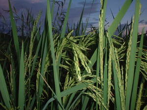

paley 
/palɔy/
n.
“rice”
1.
n.
Oryza_sativa
the rice plant
Migpamula a te paley gabii.
I was planting a rice yesterday.
Wrd.Gloss: rice
Cult. Varieties: (Tag) binaliwis, binayuyò, binirhín, buntut-kabayo, kinandá, kinarayom, kinastilà, dinalaga, dumalî, elon-elon, inabaká, makán, malagkít, pinawà, pinursigé, sinampablo, sinampaga etc.
Spec. pilit —sticky glutinous rice
Spec. lawa —rice stalk
Spec. usang —rice head
Spec. lahami —rice straw
Spec. ukaba —chaff
Spec. aligi —rice husk
Spec. lireklirek —rice bran
Spec. tubu —rice shoot
Eng. rice plant
Tag. pálay
Ceb. humay
Ilo.: pagay; irík
OCM: Flora (137), Diet (262)
DDP: Plant (1.5)
Online dict status: -
Usage level: B
2.
n.
unhusked grain (of rice ?and wheat, corn)
Cult. Stages of growth and preparation: (Tag) butikás, seed near bursting in early germination baslás, beginning of bursting palán, germinating bulubod, tubu, (T)punlâ, seedlings takdawan, plant with stem and forming the head of grain malagatas, grains developing tukól, grains ripening and plant bending from the weight giík, giniikán, grains threshed from the stalk binilád, drying grains pálay, unhusked grains ballas, behas, (T)bigás, grains husked or milled binlíd, pinlíd, small broken pieces of bigás ukaba, (T)ipá, chaff from pounding lireklirek, (T)darák, fine bran from milling timyás, full and fat grains of bigás pinipì, (T)pinipig, pressed glutinous green bigás by pounding ampáw, puffed or popped bigás often with sugar sinaing, boiled or steamed bigás while still in the pot tutóng, burnt rice at the bottom of the pot hemey, (T)kanin, cooked rice served on the table mumo, particles of kanin dropped off the dish binulalu, (T)lugaw, nilugaw, rice porridge sampurado, tsampurado, lugaw with chocolate sinangág, fried rice, usually home-made morisketa-tostada, fried rice with spices and meat, usually in restaurants.
Data Qual: It seems like a lot of the above words are Tagalog and not MS. The ones which are not MS should have the bar-v and bar-r removed from around them and (T) placed before them. [RJH]
cf. binulalu —rice porridge
cf. hemey —cooked rice
cf. pinipì
—flattened toasted rice
cf. inagkud —rice wine
Eng. unhusked grain
Tag. pálay
Ceb. pasì; bugas
OCM: Preservation and Storage of Food (251), Ethnobotany (824)
Online dict status: -
Usage level: B
3.
n.
(pinalayan, <in>–an) granary
Cult. small house on stilts built for storing grain
cf. lukung —rice vat
Eng. granary; rice store
Tag. bangán; kamalíg
Ceb. kamalig
Ilo.: kamalig
OCM: Miscellaneous Structures (349)
Online dict status: -
Usage level: R
Updated by: RJH,AAA,TME,QDL,RJH
Last updated: 22/Dec/2011
"paley" in text "Prophecy About Future"
"paley" in healthbook "Nekey-a ka kahew?"
"paley" in healthbook "Keilangan ka meupiya neg kakeen"
"paley" in healthbook "Keilangan ka meupiya neg kakeen"
"paley" in healthbook "Keilangan ka meupiya neg kakeen"
"paley" in healthbook "Egmenuwen ta ne keneg masulug ka me anak ta"
This page last updated: 19/May/2012
Copyright © 2009-2010, Matigsalug Language Christian Association, Inc